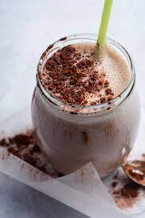

Mass Gaining Shake

Beschreibung
Der Mass Gaining Shake ist eine gute Möglichkeit, um am z.B. am Ende des Tages auf seine Kalorien und Proteine zu kommen.
Er kann auch als Alternative für eine Mahlzeit in einer Diät in einer abgespeckten Variante getrunken werden.
Zutaten
- 1x Banane
- 300 ml Milch oder Alternative
- 150 ml Wasser
- Großer Schuss Agavendicksaft
- 3 Esslöffel Haferflocken
- 1 Esslöffel Leinsamen
- 1 Scoop Proteinpulver deiner Wahl
- 1 Hand Voll Nüsse deiner Wahl
- Optional: Gefrorene Früchte
Zubereitung
- Alle Zutaten in einen Mixer hinzufügen.
- Gut mixen bis die gewünschte Konsistenz erreicht ist.
- Fertig